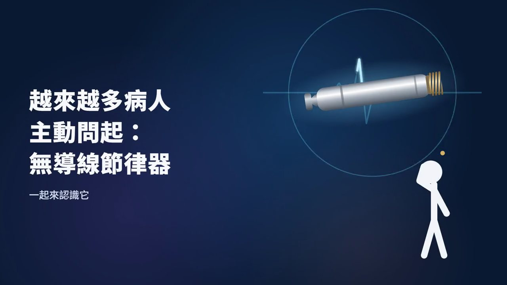

心律不整與節律器・・林柏霖
心跳太慢（心跳過慢）怎麼辦？心臟節律器怎麼選
心跳過慢若是藥物或電解質造成，常可逆轉；持續過慢又頭暈、喘或血壓不穩時，才考慮裝節律器，有導線或無導線由醫師依您的需求討論。

本文最早寫於 2021 年。健保給付規定已於 2022 年 5 月 1 日修正（B101-3），新機型與給付條件仍會調整，以健保署最新公告為準。
心跳過慢不一定要裝節律器：如果原因是藥物副作用或電解質異常，常常可以逆轉；但如果心跳持續過慢，又有頭暈、喘或血壓不穩，就要考慮心臟節律器。目前台灣有傳統有導線和新型無導線兩種機型，哪一種適合您，由心臟科醫師依您的需求和疾病嚴重度，一起討論分析。
心跳過慢有哪些症狀和原因
一般人的心跳約每分鐘 60 到 100 下。心跳低於標準時，可能出現頭暈、胸悶、喘或全身無力，嚴重時會昏倒。常見的原因包括老化、心肌梗塞、電解質異常，以及藥物。如果心跳過慢，又合併上面這些症狀，要趕快就醫評估。
什麼時候需要節律器
醫師會先找可以逆轉的原因，例如藥物或電解質。處理之後症狀還在，或是心跳持續過慢並合併頭暈、喘、血壓不穩，才會考慮植入節律器。節律器會在心跳太慢的時候，發出微小的電訊號讓心臟跳起來。新型的節律器能依您當下的活動量調整心跳，走路、上樓梯時心跳跟得上；搭配居家監控，心跳資料還能上傳雲端，讓醫師掌握狀況。
傳統有導線與無導線有什麼差別
- 傳統節律器：機器放在胸前皮下的口袋，用導線連到心臟。
- 無導線節律器：差不多一顆膠囊大小，從大腿根部的靜脈用導管送進右心室，直接固定在心室壁上。胸前沒有傷口、沒有導線，也不影響手臂的活動。
沒有導線，就沒有導線斷裂磨損的問題；沒有口袋，就沒有口袋感染的問題。放無導線或傳統節律器都是經血管進到心臟的手術，心臟穿孔、出血這類風險兩者都有；無導線節律器也有自己的風險，例如裝置位置不穩。新竹馬偕醫院從 2017 年 8 月開始引進膠囊型的無導線節律器，當時的報導提到它體積約 0.8 立方公分、重約 2 公克。
哪些人適合無導線節律器
無導線節律器現在分三種：放在右心室的心室型，適合心房顫動合併心跳過慢；放在右心房的心房型，以及心房、心室各一顆的雙腔系統，適合病竇症候群、房室傳導阻滯這類需要心房和心室照順序跳的人。病竇症候群的問題在心房，國際指引首選能照顧心房的節律方式；早期無導線只有心室型，現在已經可以選，不過這類方案目前健保不給付，需要自費。詳細比較請看無導線節律器主題館。
健保對無導線節律器有給付規定（單腔 B101-3，2022 年 5 月 1 日起；雙腔 B101-4，2022 年 8 月 1 日起，適用房室傳導阻滯且心房功能還在的人）。單腔的條件是：病竇症候群，或是房室傳導阻滯合併持續性、永久性心房顫動而造成心跳過慢，而且因為「沒有適當血管通路」，沒辦法植入傳統節律器。所謂沒有適當血管通路，是指下列五種情況之一：兩側鎖骨下靜脈阻塞、上腔靜脈阻塞超過 25%、有血液透析的動靜脈廔管、血液透析的人工導管、化療用的人工血管。使用前要先完成個案登錄，並送健保署事前審查核准；植入後 30 天內與第 12 個月，還要登錄追蹤狀況。給付規定沒有另外列出心房型；心房型、以及病竇症候群使用雙腔系統能不能申請健保，請向醫院確認。不符合條件的人要自費。詳細條件請以健保署現行公告為準。
電池用完怎麼辦，能做核磁共振嗎
無導線節律器的電池壽命依機型與起搏比例而不同，廠商提供的使用年限是推估，不是長期追蹤的結果。如果幾乎每一下心跳都要靠它來起搏，電池就會用得比較快，所以裝完之後要定期回診檢查電量。電池用完時，有兩種做法：把舊的留在原處停用、在旁邊再放一顆新的，或是取出舊的再植入新的；醫師會依手術風險來選擇。新型節律器已經突破過去不能做核磁共振的限制，但必須是相容的機型並依規定設定，檢查前請告訴醫院您裝有節律器。
裝完以後要注意什麼
傷口如果發紅、發熱、腫脹、疼痛，或有液體流出，要儘快就醫。要定期回診檢查，接受其他治療時主動出示節律器的識別卡；平常保持健康的生活型態，避免吸菸、少喝酒，對心臟整體健康有幫助。
本文為一般衛教，不能取代門診評估；要裝哪一種節律器，請和您的心臟科醫師討論。

參考資料
- 全民健康保險特殊材料給付規定修正對照表 B101-3 無導線心律調節器（健保署，2022-05-01 生效）
- 中華民國心律醫學會 心律不整衛教網：心房顫動之藥物及非藥物治療（含節律器說明）
- 今健康：心跳過慢有猝死風險？心臟節律器怎麼選？（林柏霖醫師受訪，2021）
- 元氣網（聯合新聞網）：心律異常患者新選擇 新竹馬偕引進無導線調節器（2018-07-05）
每個人的狀況不同，文章不能取代門診評估。想知道自己適不適合，歡迎帶著過去的檢查報告來門診討論。